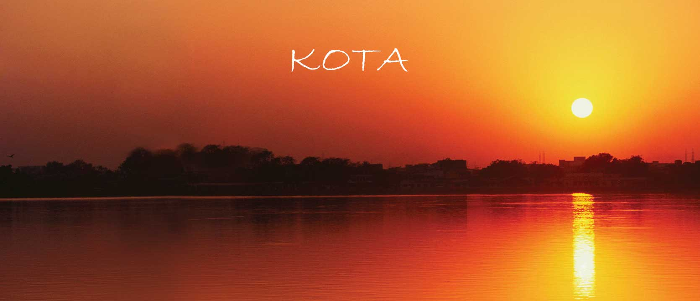
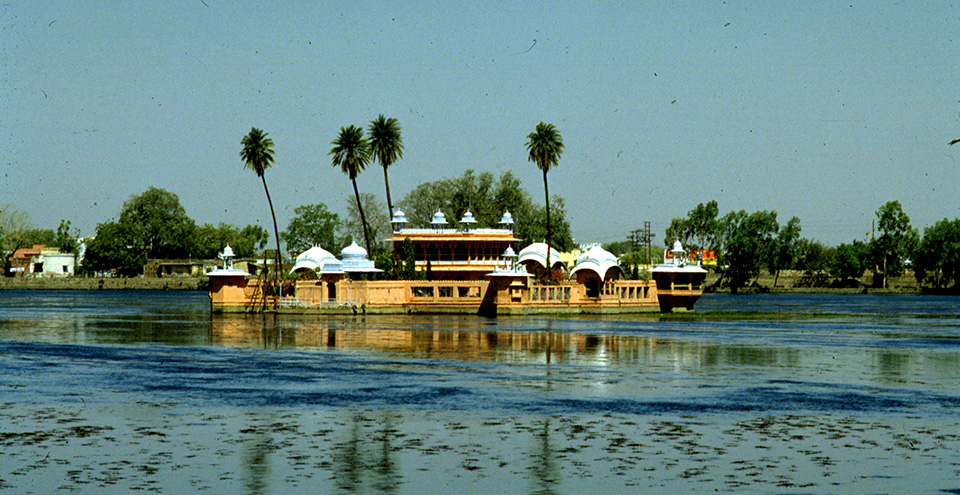
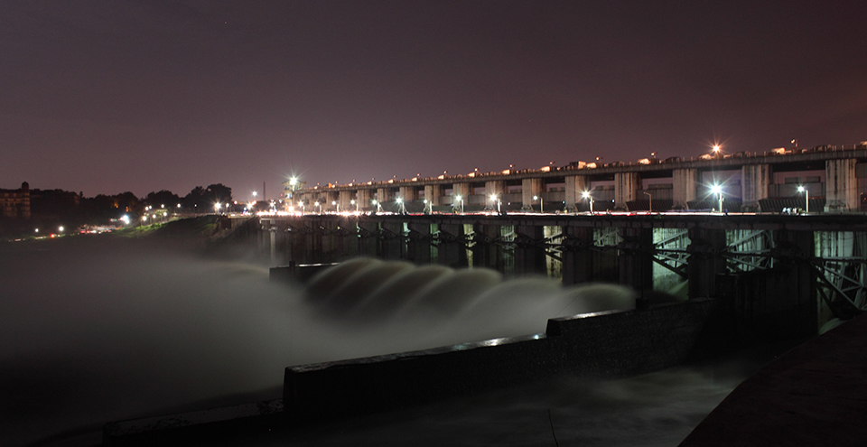
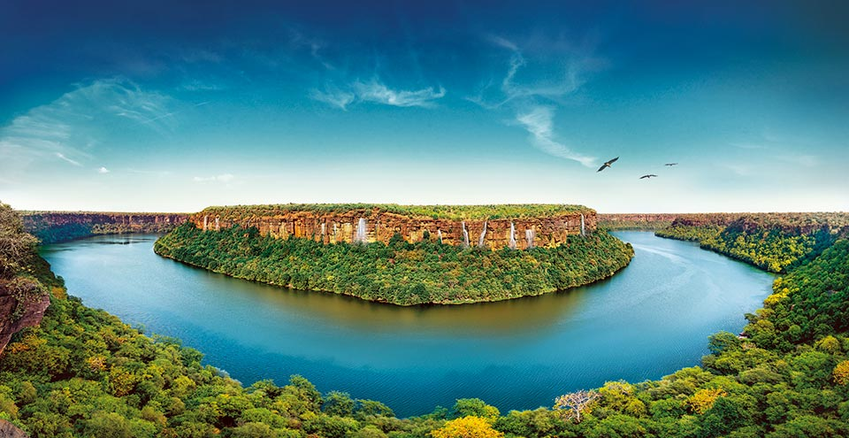

KOTA
THE LAND OF THE CHAMBAL
Kota is the third largest city in the state of Rajasthan and is one of the popular tourist destinations. Situated on the banks of the Chambal River, the city of Kota is famous for its distinctive style of paintings, palaces, museums, and places of worship. The city is known for gold jewellery, Doria sarees, silk sarees and the famous Kota stone.
The history of Kota dates back to the 12th century when Rao Deva conquered the territory and founded Hadoti. The independent Rajput state of Kota was carved out of Bundi in 1631. The kingdom of Kota had a turbulent history as it was raided by various Mughal rulers, Maharajas of Jaipur and even the Maratha warlords. The city of Kota is well known all over the world for its architectural splendour comprising beautiful palaces, temples and museums which exhibit the grandeur of the foregone era.
ATTRACTIONS & PLACES TO VISIT AND EXPLORE IN KOTA

JAGMANDIR PALACE
The Jagmandir Palace was built by one of the queens of Kota between 1743 and 1745, and is situated in the middle of the Kishore Sagar Lake. Built in red sandstone, it is a monument of exquisite beauty. The palace is open to tourists who can enjoy boat rides in the Kishore Sagar Lake and the panoramic view of the palace from the lake. The Keshar Bagh, situated near the Jagmandir Palace is well known for its royal cenotaphs.

KOTA BARRAGE
Kota Barrage is one of the most important water reservoirs in the Rajasthan state constructed over Chambal River. The Kota Barrage spreads over an area of 27,332 square kilometres, which makes it as large as Haiti! The mesmerizing view of water flowing through the gates with a great force makes it a popular tourist attraction. The Kansua temple of Lord Shiva, housing a rare four-faced Shiva lingam is a place of interest near the barrage.

SEVEN WONDER PARK
The Seven Wonder Park is a Rs. 20 crores worth project developed along the Kishore Sagar Lake at Vallabh Bari in Kota. A single visit to this park allows visitors to get a glimpse of the replicas of all the Seven Wonders of the World.

MUKUNDARA TIGER RESERVE
The Mukundara Tiger Reserve is 50 kilometres from Kota. Tigers are often relocated here from Ranthambore Reserve. It has a core area of 417 square kilometres and a buffer zone covering 342.82 square kilometres. Other wildlife includes panther, deer, wild boar and bear. This thickly wooded area is home to a large variety of birds as well.

GARADIA MAHADEV TEMPLE
One can get a grand view of River Chambal from the Garadia Mahadev Temple. Situated on Dabi Road (NH 76), this temple provides an incredible view of the surrounding wilderness. It is a must visit, especially during monsoon.